1Sobre o sistema
1.1 Para que serve
O sistema registra o caminho de cada bobina de aço, da compra até a obra, para responder em segundos a duas perguntas de uma auditoria de certificação ou de um recall:
- De qual bobina mãe, lote e certificado saiu o aço que foi para a obra X?
- Dado um lote com problema, quais obras e ordens de produção (OP) consumiram esse aço?
Para isso, cada tira cortada recebe um código único, o CUB, colado em uma etiqueta com QR. Esse código acompanha a bobina até acabar, mesmo quando sobra um pedaço que volta ao estoque.
1.2 O caminho da bobina
| Etapa | Quem faz | Onde no sistema |
|---|---|---|
| Cadastrar fornecedores, usinas, obras, perfiladeiras e o catálogo de materiais | Suprimentos | Cadastros |
| Registrar a bobina mãe e anexar o certificado | Almoxarifado | Bobinas mãe |
| Montar e enviar o plano de corte ao prestador | PCP | Plano de corte |
| Receber as tiras, pesar, gerar os CUBs e imprimir as etiquetas | Almoxarifado | Recebimento |
| Montar a bobina na perfiladeira e registrar sobra ou consumo | Produção | Uso de bobina |
| Bloquear ou liberar um CUB ou lote | Qualidade | Bloqueio e liberação |
| Consultar, levantar recall e imprimir dossiês | Todos | Consulta, Recall e relatórios |
| Conferir quem fez o quê | Auditor e Administrador | Auditoria |
1.3 Conceitos que aparecem o tempo todo
| Termo | O que é |
|---|---|
| Bobina mãe | A bobina inteira, comprada da usina ou do fornecedor. Tem NF e certificado. |
| Lote (LS) | Número que o prestador de slitagem dá à bobina mãe. É a chave da Qualidade: certificado, bloqueio e recall são por lote. |
| Tira / bobina-filha | Resultado do corte da bobina mãe. Cada tira recebe um CUB. |
| CUB | Código Único da Bobina, no formato CUB-AAAA-NNNNN (ano e número). Nunca se repete e acompanha a bobina até acabar. |
| Plano de corte | Quantas tiras de que largura saem de cada bobina mãe. |
| Refilo | A sobra lateral do corte, que é descartada. Não entra no peso das bobinas. |
| Sobra | O que resta de uma bobina depois de um uso. Mantém o mesmo CUB e volta ao estoque. |
| OP | Ordem de produção (no cadastro de uso aparece como "OP / protocolo"). |
| Certificado de qualidade | Documento da usina que prova que o material atende à norma. No sistema ficam o número e o arquivo, por bobina mãe; todos os CUBs dela herdam. |
| FVM | Ferramenta externa da empresa (checklist e não conformidade). O sistema só guarda o número e recebe o efeito de bloquear ou liberar. |
| Recall | Levantamento de tudo que foi feito com um lote ou certificado. |
1.4 O que esta versão é
Os dados de exemplo vêm da planilha de controle da empresa (amostra de lotes e CUBs de 2026). Os pesos dos CUBs de exemplo são estimados pela fórmula do plano de corte, porque a planilha só tinha rateio.
2Primeiros passos
2.1 Conhecendo a tela
Ao abrir o sistema você vê o Início. À esquerda fica o menu, sempre visível; à direita, o conteúdo da tela.
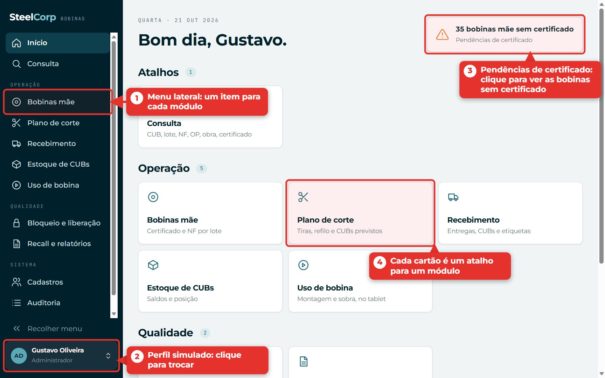
- 1Menu lateral: um item para cada módulo
- 2Perfil simulado: clique para trocar
- 3Pendências de certificado: clique para ver as bobinas sem certificado
- 4Cada cartão é um atalho para um módulo
- Menu lateral: agrupa os módulos em Operação, Qualidade e Sistema. Mostra só o que o seu perfil pode usar.
- Cartão de perfil (rodapé do menu): mostra quem está usando e o perfil. Clique para trocar.
- Pendências de certificado: quantas bobinas mãe estão sem certificado. Clique para ir à lista.
- Cartões de atalho: cada um abre um módulo.
2.2 Trocar de perfil
Como não há login, o perfil é escolhido na tela. Serve para ver o sistema como cada pessoa o veria. Ao trocar, o menu e as permissões mudam na hora.
- Clique no cartão de perfil, no rodapé do menu.
- Escolha o perfil na lista (Almoxarifado, PCP, Produção, Qualidade, Suprimentos, Administrador ou Auditor).
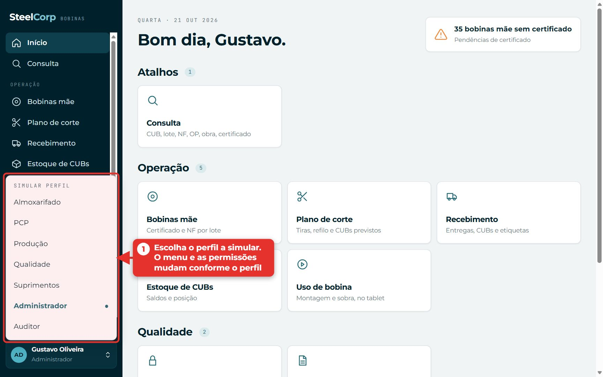
- 1Escolha o perfil a simular. O menu e as permissões mudam conforme o perfil
2.3 Recolher o menu
Clique em Recolher menu para deixar só os ícones e ganhar espaço, o que é útil no tablet. Em janelas estreitas o menu já aparece recolhido. Clique de novo para expandir.
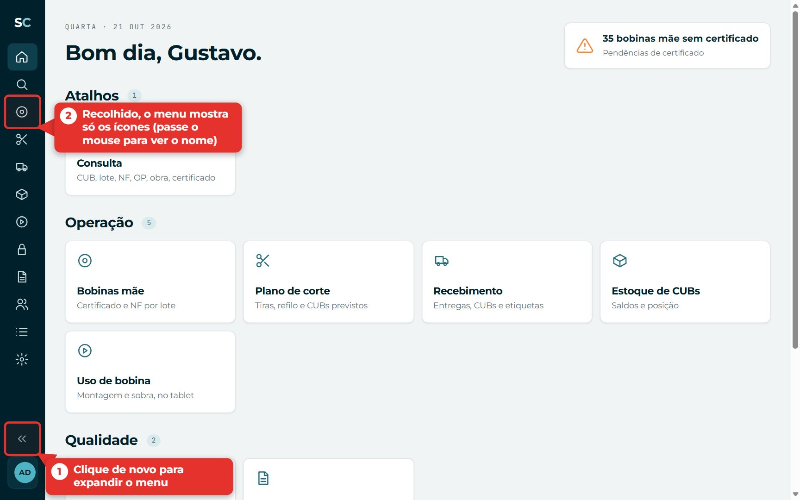
- 1Clique de novo para expandir o menu
- 2Recolhido, o menu mostra só os ícones (passe o mouse para ver o nome)
2.4 Perfis e permissões
Cada perfil vê e faz apenas o que lhe cabe. O Administrador pode tudo. O Auditor só consulta: não aparece nenhum botão de alterar.
| Ação | Almox. | PCP | Produção | Qualidade | Suprim. | Admin | Auditor |
|---|---|---|---|---|---|---|---|
| Consultar, buscar, estoque e recall | ● | ● | ● | ● | ● | ● | ● |
| Cadastros (fornecedor, usina, obra, perfiladeira, catálogo) | — | — | — | — | ● | ● | só vê |
| Registrar bobina mãe | ● | — | — | — | — | ● | — |
| Anexar ou substituir certificado | ● | — | — | ● | — | ● | — |
| Plano de corte (montar, enviar, confirmar) | — | ● | — | — | — | ● | só vê |
| Receber entrega e gerar CUBs | ● | — | — | — | — | ● | só vê |
| Imprimir etiquetas | ● | — | ● | — | — | ● | — |
| Posição no estoque | ● | — | ● | — | — | ● | — |
| Abrir e fechar uso de bobina | — | — | ● | — | — | ● | — |
| Bloquear e liberar | — | — | — | ● | — | ● | só vê |
| Configurações e restaurar dados de exemplo | — | — | — | — | — | ● | — |
| Auditoria | — | — | — | — | — | ● | ● |
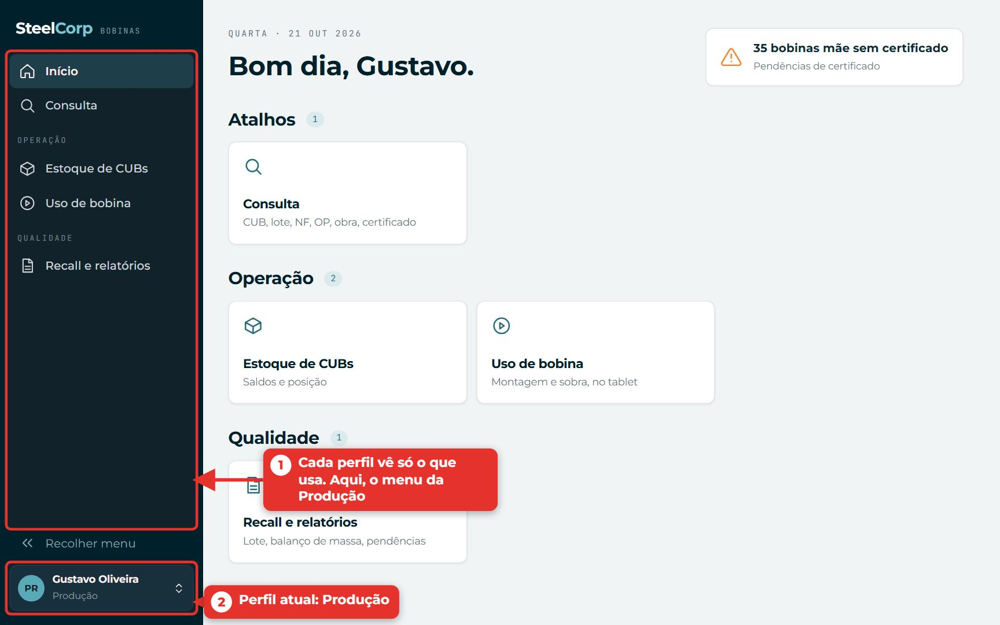
- 1Cada perfil vê só o que usa. Aqui, o menu da Produção
- 2Perfil atual: Produção
2.5 Trabalhando com as tabelas
As telas de lista seguem o mesmo padrão. Os exemplos de imagem estão nos capítulos seguintes.
- Ordenar: clique no nome da coluna. O primeiro clique ordena em ordem crescente (▲); o segundo, em decrescente (▼). Números ordenam como números e textos em ordem natural (o lote 9843 vem antes do 10001). Campos vazios ficam sempre no fim.
- Filtros com contadores: as abas no alto (por exemplo "Sem certificado 35") filtram a lista e mostram quantos itens há em cada uma.
- Busca: o campo de busca filtra a lista enquanto você digita.
- Rolagem: a tabela ocupa o resto da tela e rola por dentro, com o cabeçalho fixo. O título, as abas e os filtros não se mexem. Se a janela for muito baixa, a página inteira rola.
- Abrir: clicar em uma linha abre a ficha daquele item.
2.6 Quando o sistema recusa algo
As regras da empresa estão dentro do sistema. Quando algo não pode ser feito, aparece um aviso em vermelho dizendo o motivo e nada é gravado. Por exemplo: registrar uma bobina sem certificado, usar um CUB bloqueado ou fechar uma entrega com a contagem errada. No capítulo de dúvidas há uma lista das mensagens mais comuns e o que fazer em cada uma.
2.7 Atalhos e dicas de digitação
| Onde | Como | O que faz |
|---|---|---|
| Qualquer tela (fora de campos de texto) | / | Abre a Consulta, pronta para digitar. |
| Recebimento, campo de peso | Enter | Vai para o peso da próxima linha. Na última linha, cria outra igual. |
| Estoque, campo de posição | Enter / Esc | Salva a posição / cancela. |
| Uso de bobina, campo do CUB | Leitor de código | O leitor digita o CUB e dá Enter sozinho. O cursor já está no campo. |
| Números | Vírgula ou ponto | Aceitam os dois (por exemplo 0,95 ou 0.95). |
3Cadastros
Quem usa: SuprimentosAdministrador
Aqui ficam as listas que alimentam os formulários: fornecedores, usinas, obras, perfiladeiras e o catálogo de materiais. Só Suprimentos e o Administrador alteram; os demais perfis só veem.
3.1 Fornecedores, usinas, obras e perfiladeiras
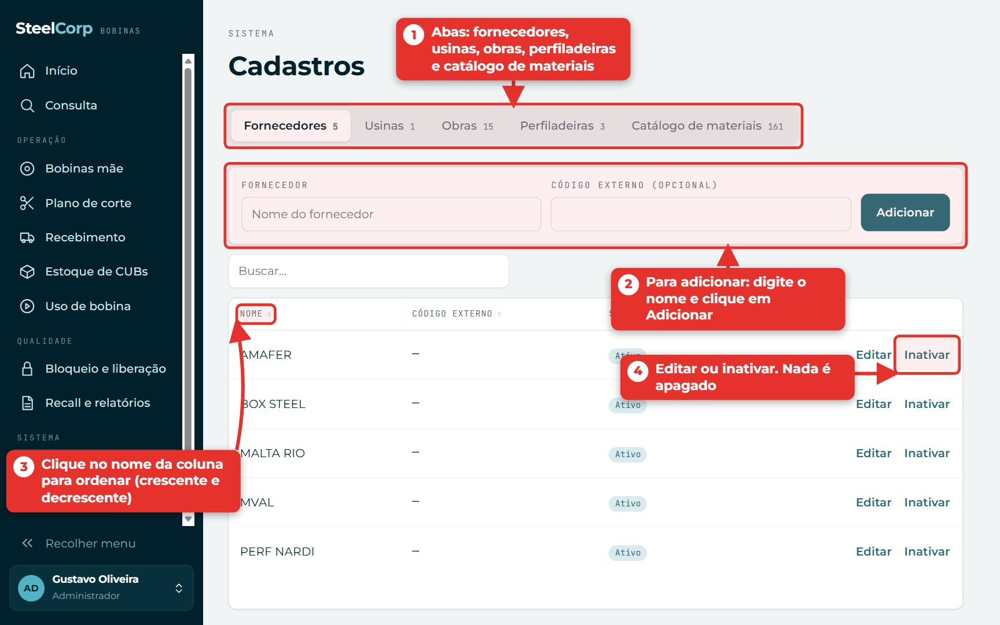
- 1Abas: fornecedores, usinas, obras, perfiladeiras e catálogo de materiais
- 2Para adicionar: digite o nome e clique em Adicionar
- 3Clique no nome da coluna para ordenar (crescente e decrescente)
- 4Editar ou inativar. Nada é apagado
Adicionar: escolha a aba, digite o nome (e, se quiser, um código externo) e clique em Adicionar.
Nome repetido: o sistema não aceita o mesmo nome duas vezes (sem diferenciar maiúsculas de minúsculas).
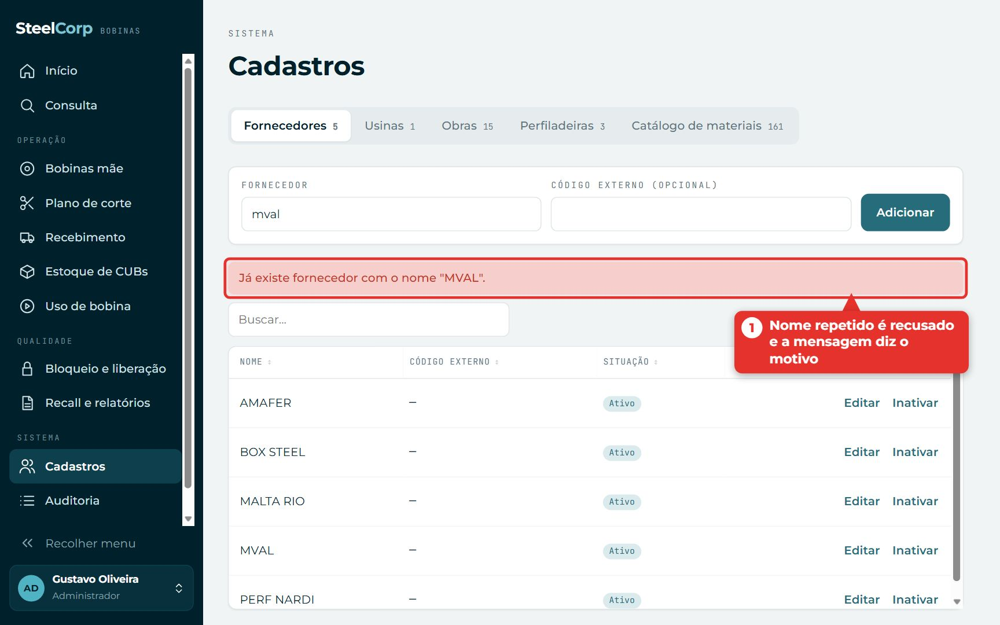
- 1Nome repetido é recusado e a mensagem diz o motivo
Editar: clique em Editar na linha. O formulário passa a editar aquele registro e o botão vira Salvar.
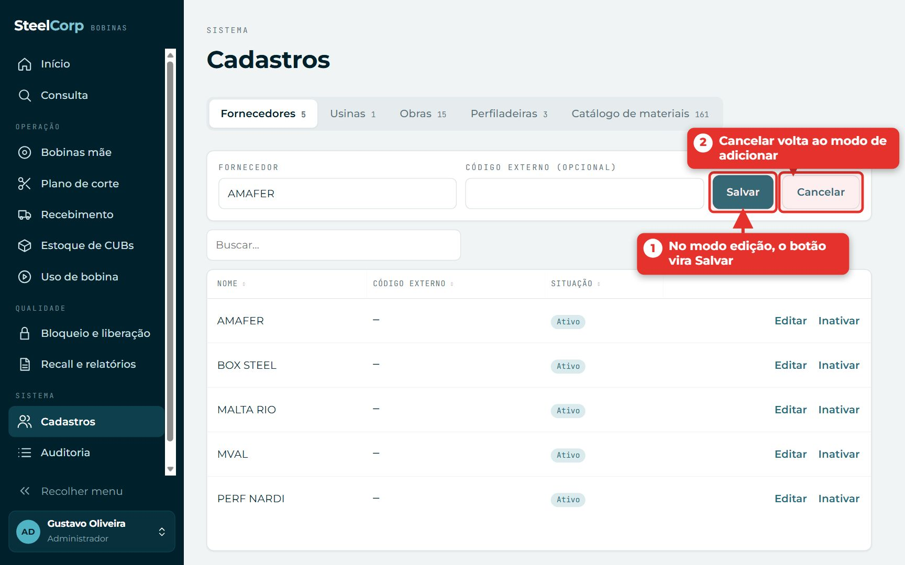
- 1No modo edição, o botão vira Salvar
- 2Cancelar volta ao modo de adicionar
Inativar: clique em Inativar para tirar o item das listas de escolha, sem apagar o histórico. Reativar traz de volta. Nada que já foi usado é apagado.
3.2 Catálogo de materiais
O catálogo liga espessura, largura exata e galvanização a um código ERP. É dele que o Recebimento tira o código de cada tira. Vários registros podem apontar para o mesmo código, porque a largura varia alguns milímetros dentro da tolerância.
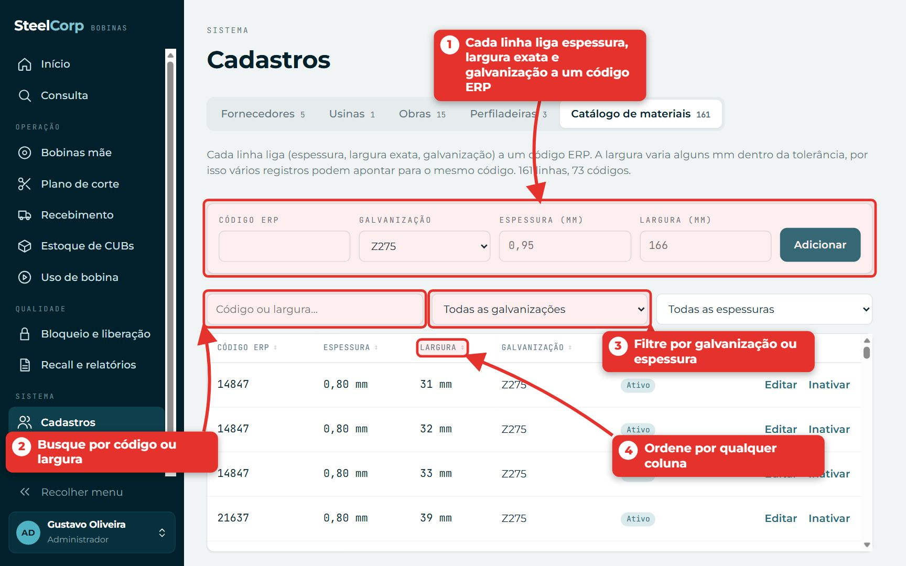
- 1Cada linha liga espessura, largura exata e galvanização a um código ERP
- 2Busque por código ou largura
- 3Filtre por galvanização ou espessura
- 4Ordene por qualquer coluna
- A combinação espessura + largura + galvanização é única: não dá para cadastrar duas vezes.
- A largura é em milímetros inteiros; a espessura aceita casas decimais (0,95).
- Use a busca por código ou largura e os filtros de galvanização e espessura para achar uma linha.
4Configurações
Quem usa: Administrador
As regras gerais do sistema. Só o Administrador altera. Cada mudança é gravada na auditoria, com o valor antes e depois.
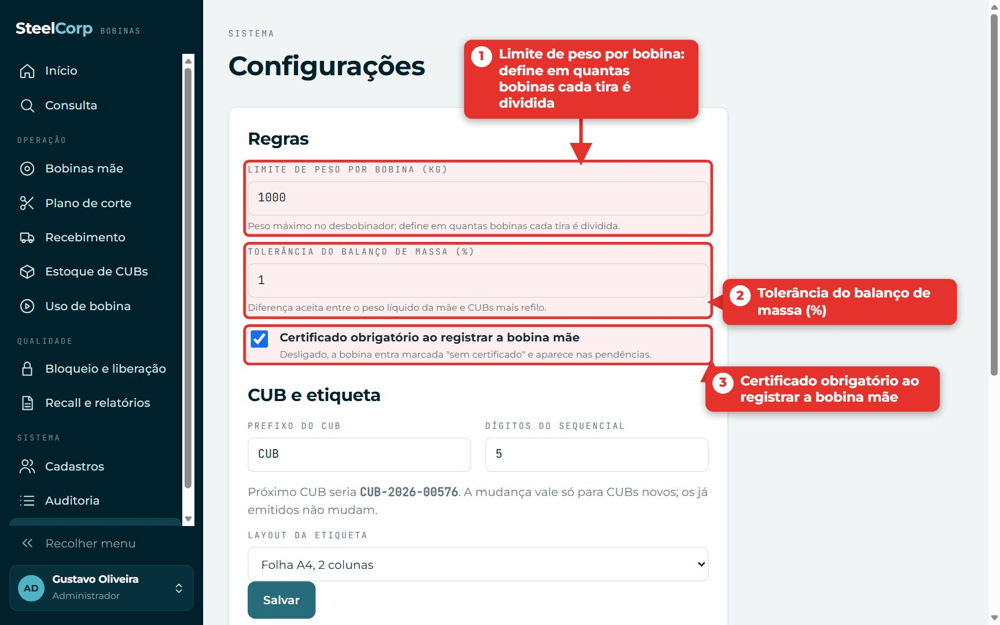
- 1Limite de peso por bobina: define em quantas bobinas cada tira é dividida
- 2Tolerância do balanço de massa (%)
- 3Certificado obrigatório ao registrar a bobina mãe
| Configuração | Para que serve | Padrão |
|---|---|---|
| Limite de peso por bobina (kg) | Peso máximo no desbobinador. Define em quantas bobinas cada tira é dividida no plano de corte. | 1.000 kg |
| Tolerância do balanço de massa (%) | Diferença aceita entre o peso líquido da bobina mãe e a soma dos CUBs mais o refilo. | 1,0% |
| Certificado obrigatório | Ligado, a bobina mãe só é registrada com número e arquivo do certificado. Desligado, ela entra marcada "sem certificado" e aparece nas pendências. | Ligado |
| Prefixo e dígitos do CUB | Formato dos CUBs novos. Os já emitidos não mudam. A tela mostra o próximo CUB como exemplo. | CUB, 5 dígitos |
| Layout da etiqueta | Folha A4 com 2 colunas ou etiqueta térmica de 100 × 50 mm. | A4 |
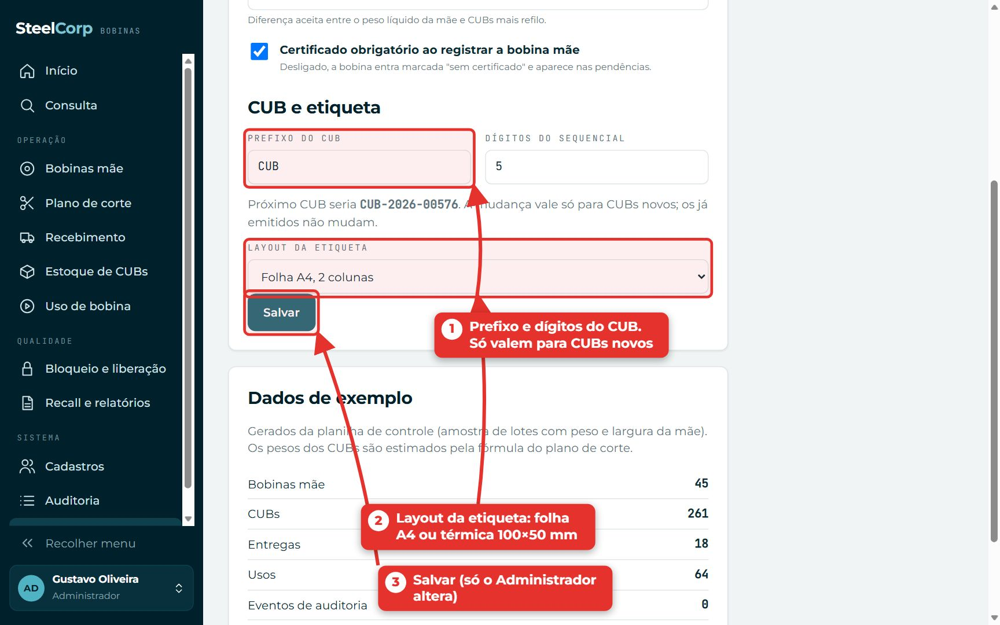
- 1Prefixo e dígitos do CUB. Só valem para CUBs novos
- 2Layout da etiqueta: folha A4 ou térmica 100×50 mm
- 3Salvar (só o Administrador altera)
4.1 Restaurar dados de exemplo
Volta os dados ao conjunto de exemplo (bobinas, CUBs, entregas, usos). O que foi lançado neste navegador é substituído, mas a auditoria é mantida e recebe o registro da restauração.
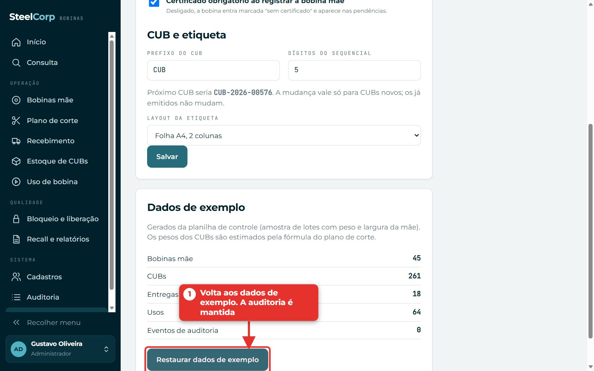
- 1Volta aos dados de exemplo. A auditoria é mantida
5Bobinas mãe
Quem usa: AlmoxarifadoQualidadeAdministrador
5.1 A lista
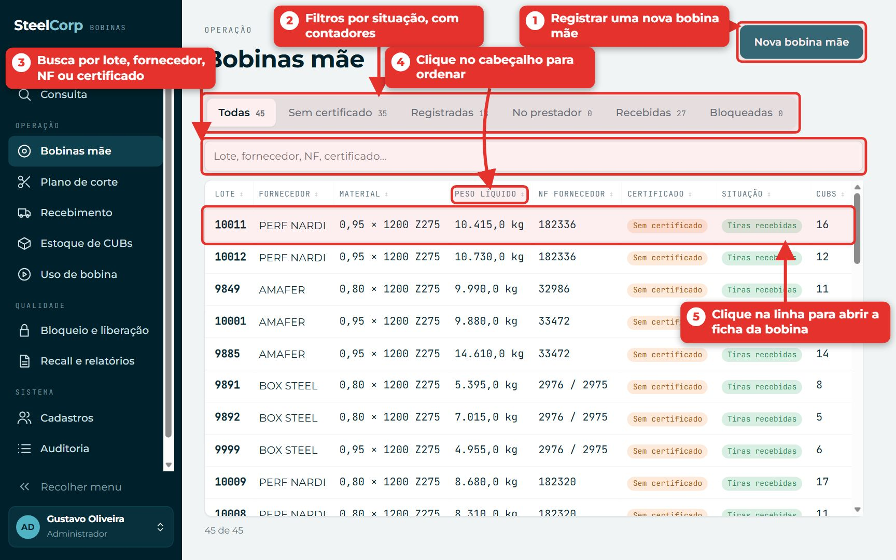
- 1Registrar uma nova bobina mãe
- 2Filtros por situação, com contadores
- 3Busca por lote, fornecedor, NF ou certificado
- 4Clique no cabeçalho para ordenar
- 5Clique na linha para abrir a ficha da bobina
- Filtros: Todas, Sem certificado, Registradas, No prestador, Recebidas e Bloqueadas, cada uma com o seu contador.
- Colunas: lote, fornecedor, material, peso líquido, NF do fornecedor, certificado, situação e quantidade de CUBs.
- Situações: Registrada (acabou de entrar), Plano enviado, Programada (o prestador confirmou), Tiras recebidas e Bloqueada.
5.2 Ver só as pendências de certificado
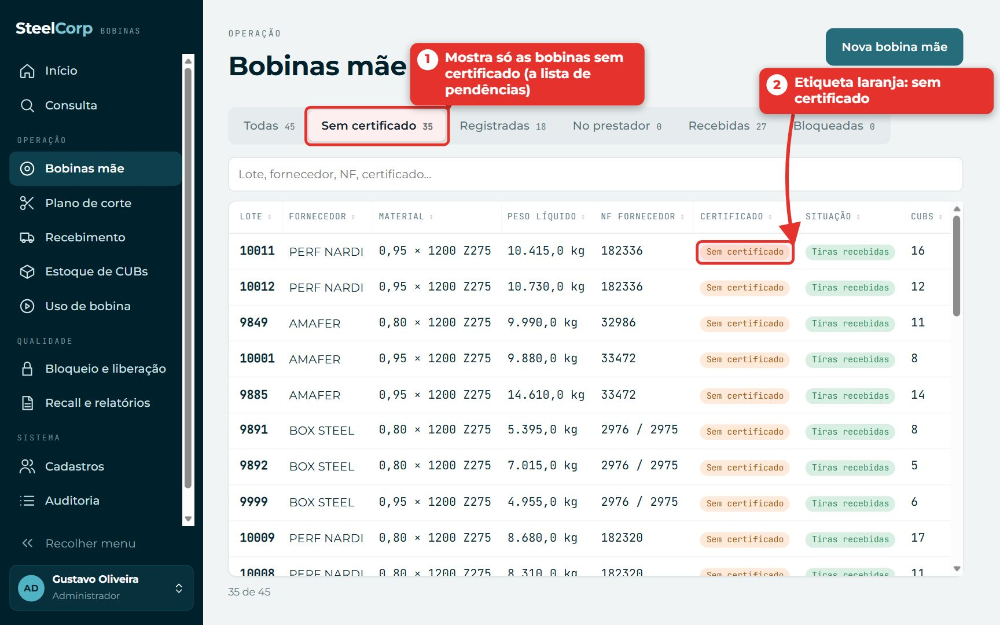
- 1Mostra só as bobinas sem certificado (a lista de pendências)
- 2Etiqueta laranja: sem certificado
A etiqueta laranja Sem certificado marca as bobinas que ainda precisam de número ou de arquivo. É esta a lista que a auditoria cobra.
5.3 Registrar uma bobina mãe
Quem registra é o Almoxarifado. Clique em Nova bobina mãe.
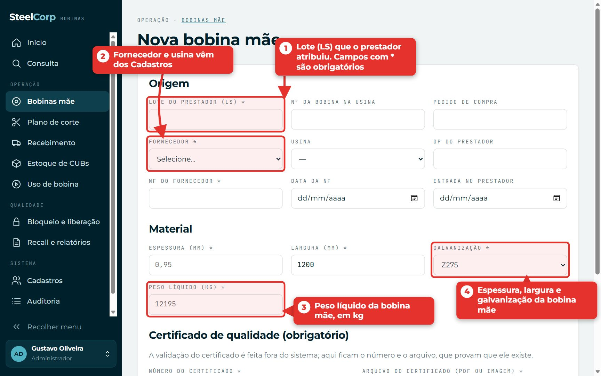
- 1Lote (LS) que o prestador atribuiu. Campos com * são obrigatórios
- 2Fornecedor e usina vêm dos Cadastros
- 3Peso líquido da bobina mãe, em kg
- 4Espessura, largura e galvanização da bobina mãe
- Informe o lote do prestador (LS), que ele comunica por e-mail. Cada lote é único.
- Escolha o fornecedor e, se for o caso, a usina (as listas vêm dos Cadastros).
- Digite a NF do fornecedor; data da NF, pedido de compra, OP do prestador e data de entrada são opcionais.
- Informe espessura, largura e galvanização da bobina mãe e o peso líquido em kg.
- Preencha o certificado (veja abaixo) e clique em Registrar bobina mãe.
5.4 O certificado é obrigatório
Por padrão, a bobina mãe só é registrada com o número e o arquivo do certificado. A validação do certificado é feita fora do sistema; aqui ficam o número e o arquivo, que provam que ele existe.
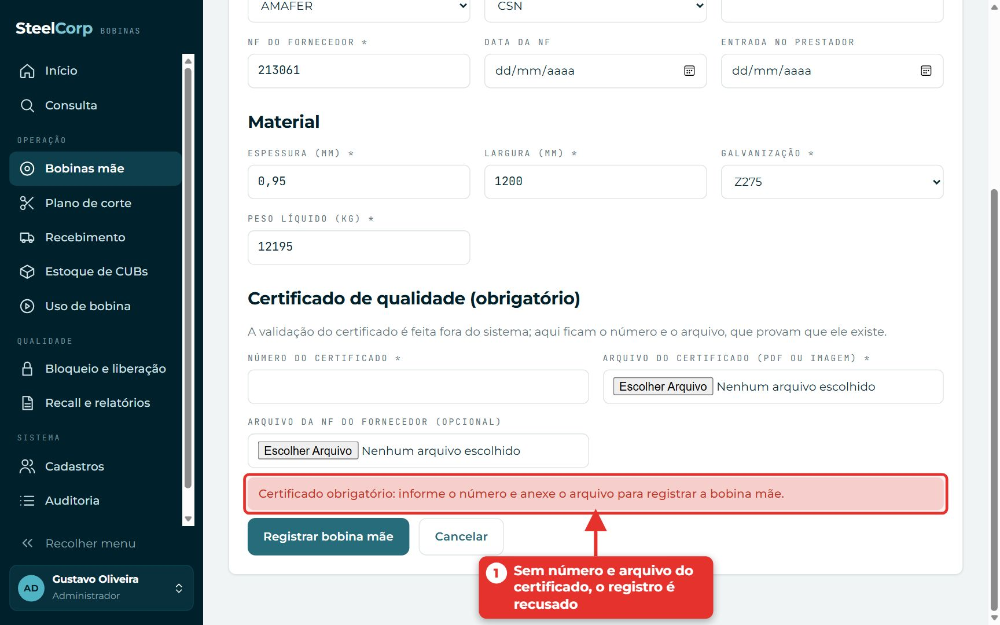
- 1Sem número e arquivo do certificado, o registro é recusado
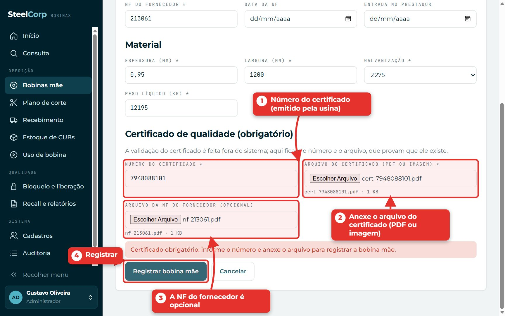
- 1Número do certificado (emitido pela usina)
- 2Anexe o arquivo do certificado (PDF ou imagem)
- 3A NF do fornecedor é opcional
- 4Registrar
5.5 A ficha da bobina mãe
Depois de registrar, o sistema abre a ficha. Para voltar a ela mais tarde, clique na linha da lista.
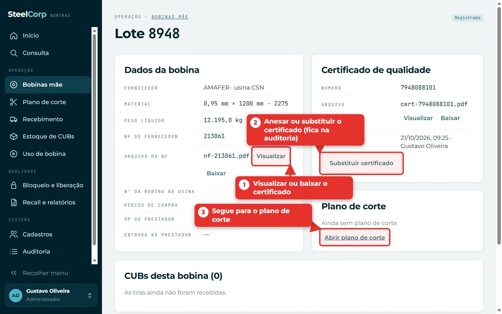
- 1Visualizar ou baixar o certificado
- 2Anexar ou substituir o certificado (fica na auditoria)
- 3Segue para o plano de corte
- Visualizar / Baixar abrem ou baixam o certificado e a NF.
- Plano de corte: mostra o plano vigente e leva ao editor.
- CUBs desta bobina: aparecem depois do recebimento, com a cor da situação de cada um.
- Histórico: cada evento, com quem fez e quando.
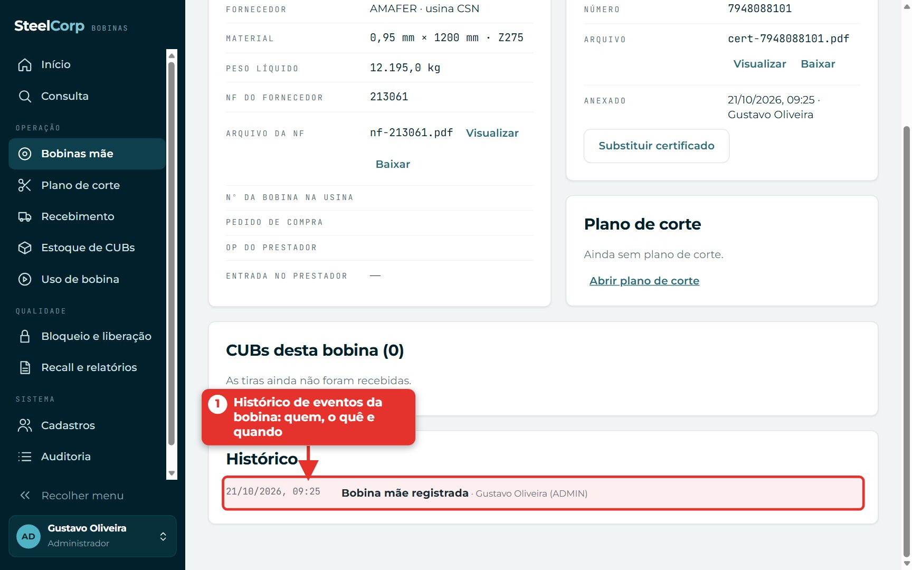
- 1Histórico de eventos da bobina: quem, o quê e quando
5.6 Anexar ou substituir o certificado
Pode ser feito pelo Almoxarifado, pela Qualidade ou pelo Administrador, a qualquer momento (por exemplo, para completar uma pendência).
- Na ficha, clique em Anexar certificado (ou Substituir certificado, se já houver um).
- Digite o número e escolha o arquivo.
- Clique em Anexar ou Substituir. A troca fica na auditoria com o número antigo e o novo.
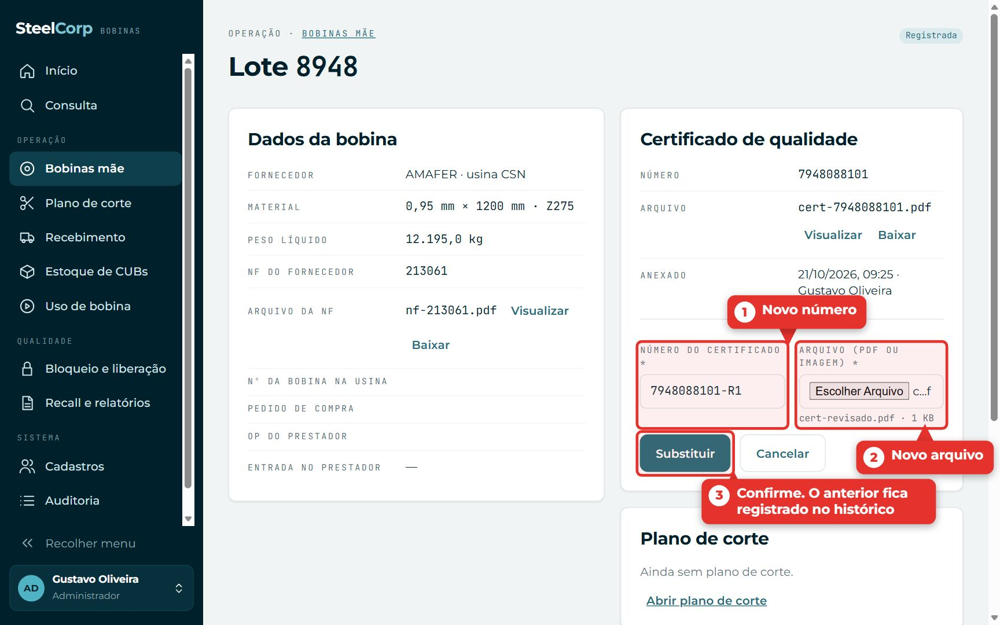
- 1Novo número
- 2Novo arquivo
- 3Confirme. O anterior fica registrado no histórico
6Plano de corte
Quem usa: PCPAdministrador
O PCP define quantas tiras, de que largura, saem de cada bobina mãe. O sistema calcula na hora o refilo, o aproveitamento e quantos CUBs serão gerados.
6.1 A lista
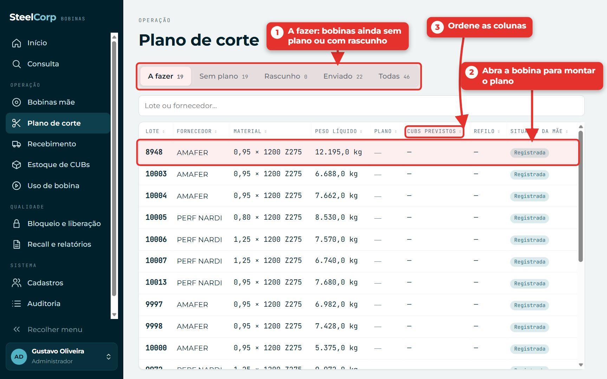
- 1A fazer: bobinas ainda sem plano ou com rascunho
- 2Abra a bobina para montar o plano
- 3Ordene as colunas
A fazer mostra as bobinas sem plano ou com rascunho. Clique na linha para abrir o editor.
6.2 Montar o plano
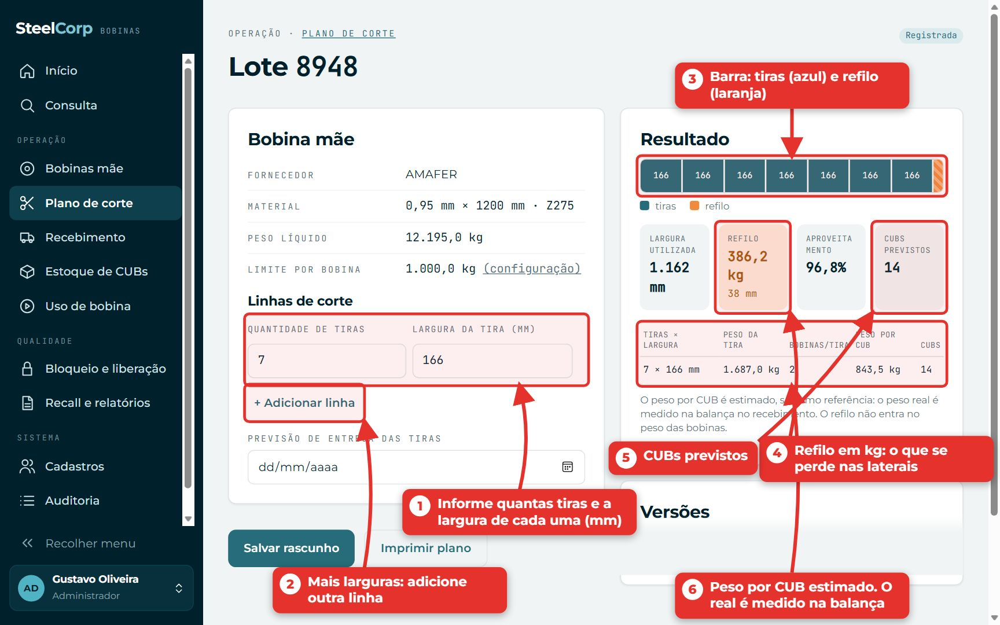
- 1Informe quantas tiras e a largura de cada uma (mm)
- 2Mais larguras: adicione outra linha
- 3Barra: tiras (azul) e refilo (laranja)
- 4Refilo em kg: o que se perde nas laterais
- 5CUBs previstos
- 6Peso por CUB estimado. O real é medido na balança
- Em Linhas de corte, digite a quantidade de tiras e a largura de cada uma (mm).
- Se houver mais de uma largura, clique em + Adicionar linha.
- Confira o resultado, que se atualiza enquanto você digita.
- Informe a previsão de entrega das tiras (opcional).
Exemplo do lote 8948 (bobina mãe de 0,95 × 1.200 mm e 12.195 kg, com 7 tiras de 166 mm):
| Resultado | Valor | Como se calcula |
|---|---|---|
| Largura utilizada | 1.162 mm | 7 × 166 |
| Refilo | 38 mm = 386,2 kg | 1.200 − 1.162 mm; peso do refilo = 12.195 × 38 ÷ 1.200 |
| Aproveitamento | 96,8% | 1.162 ÷ 1.200 |
| Peso de uma tira inteira | 1.687,0 kg | 12.195 × 166 ÷ 1.200 |
| Bobinas por tira | 2 | a tira passa do limite de 1.000 kg, então é dividida no comprimento |
| Peso estimado por CUB | 843,5 kg | 1.687,0 ÷ 2 |
| CUBs previstos | 14 | 7 tiras × 2 bobinas |
6.3 Quando a largura não cabe
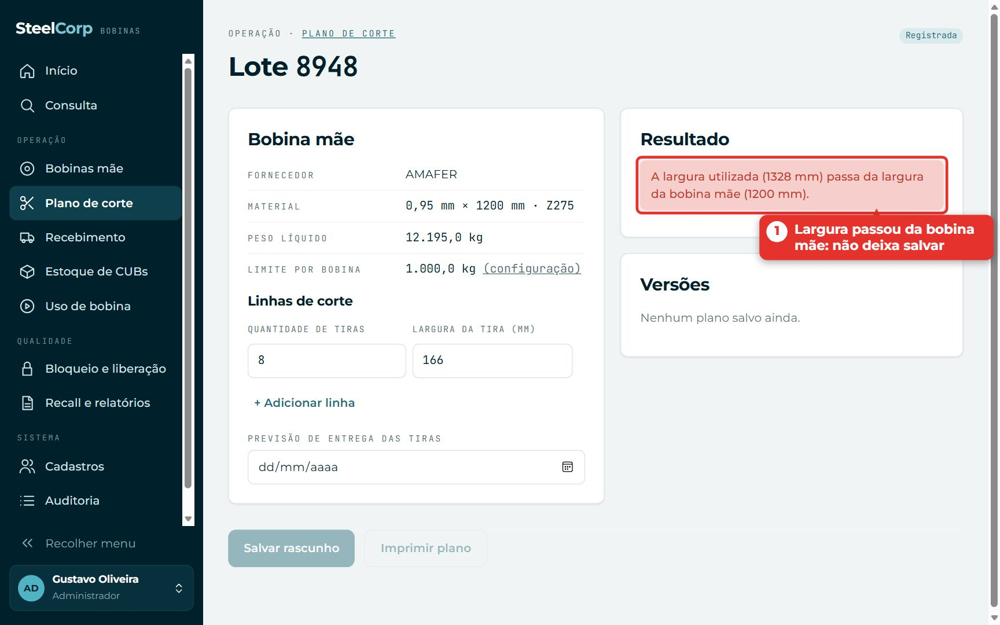
- 1Largura passou da bobina mãe: não deixa salvar
Se a soma das larguras passa da largura da bobina mãe, o sistema avisa e bloqueia o botão Salvar até você corrigir.
6.4 Salvar, enviar e confirmar
- Clique em Salvar rascunho. Salvar de novo atualiza o mesmo rascunho.
- Quando estiver certo, clique em Marcar como enviado ao prestador. A bobina mãe passa para "Plano enviado".
- Quando o prestador confirmar a programação, clique em Confirmar programação do prestador. A bobina passa para "Programada".
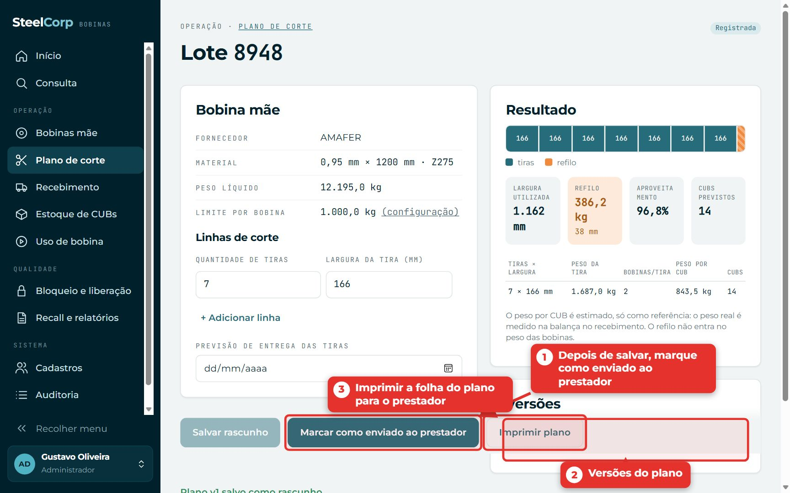
- 1Depois de salvar, marque como enviado ao prestador
- 2Versões do plano
- 3Imprimir a folha do plano para o prestador
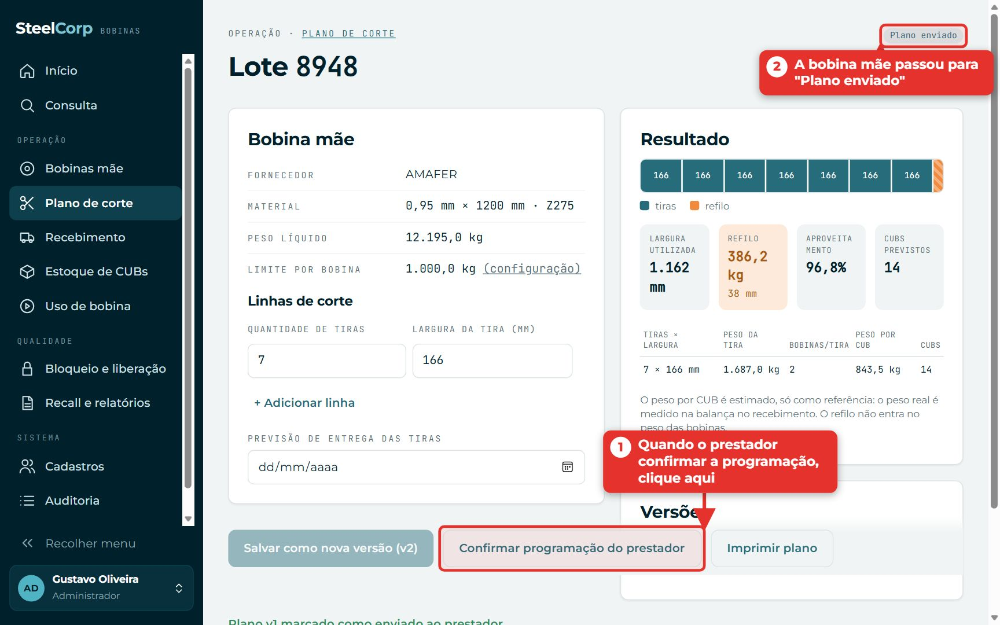
- 1Quando o prestador confirmar a programação, clique aqui
- 2A bobina mãe passou para "Plano enviado"
6.5 Mudar um plano que já foi enviado
Depois de enviado, o plano não é alterado: ao mudar as linhas, o botão vira Salvar como nova versão. Ao salvar, nasce a versão 2 e a 1 passa a "Substituído". A lista de Versões guarda tudo.
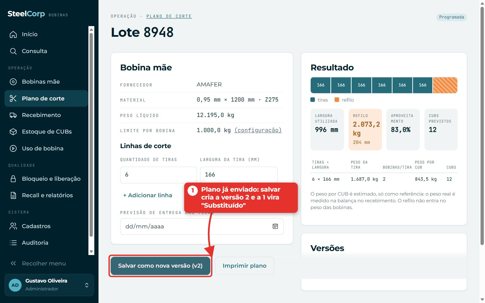
- 1Plano já enviado: salvar cria a versão 2 e a 1 vira "Substituído"
6.6 Imprimir a folha do plano
Clique em Imprimir plano. A folha sai sem menu nem botões, com lote, fornecedor, material, cortes, refilo e o desenho das tiras, para entregar ao prestador.
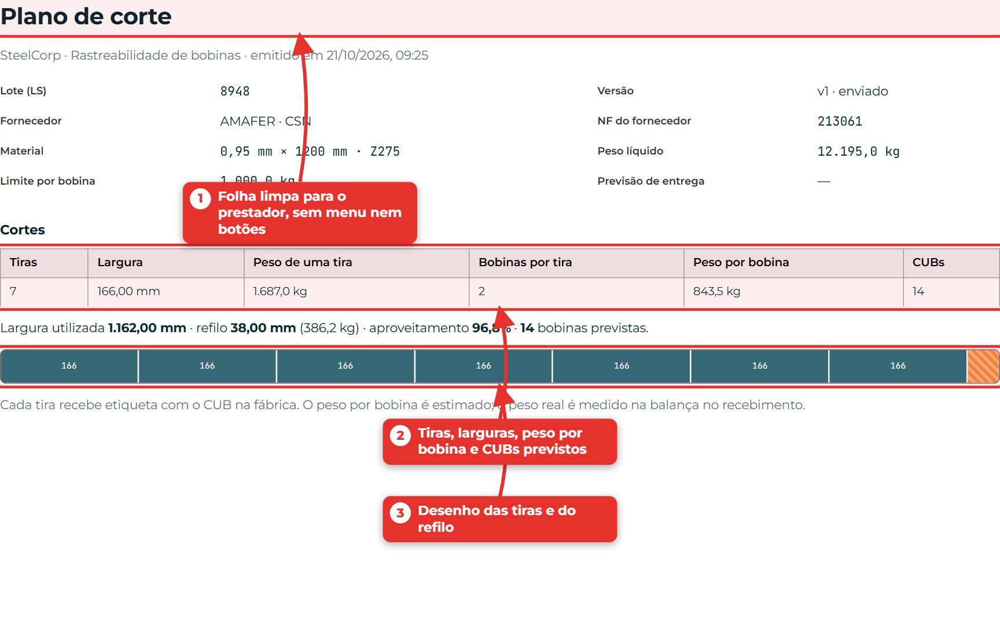
- 1Folha limpa para o prestador, sem menu nem botões
- 2Tiras, larguras, peso por bobina e CUBs previstos
- 3Desenho das tiras e do refilo
7Recebimento e etiquetas
Quem usa: AlmoxarifadoAdministrador
Quando as tiras voltam do prestador, o Almoxarifado registra a entrega, pesa cada bobina, gera os CUBs e imprime as etiquetas.
7.1 A lista de entregas
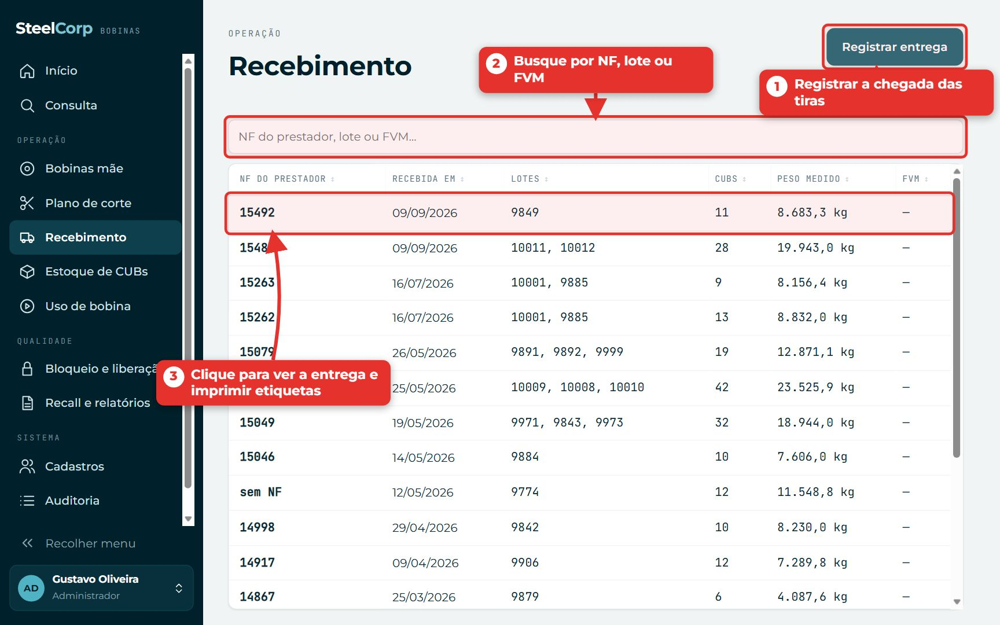
- 1Registrar a chegada das tiras
- 2Busque por NF, lote ou FVM
- 3Clique para ver a entrega e imprimir etiquetas
7.2 Registrar uma entrega
Clique em Registrar entrega.
- Digite a NF do prestador e a quantidade de bobinas declarada na NF. Data, nº da FVM e romaneio (arquivo) são opcionais.
- Em Bobinas recebidas, escolha o lote no seletor "Pré-preencher pelo plano de corte" e clique em Pré-preencher. As linhas esperadas do plano aparecem, já com a largura e o código ERP.
- Digite o peso medido na balança de cada bobina. Dica: Enter vai para a linha seguinte.
- Se quiser, informe a posição de cada uma no estoque.
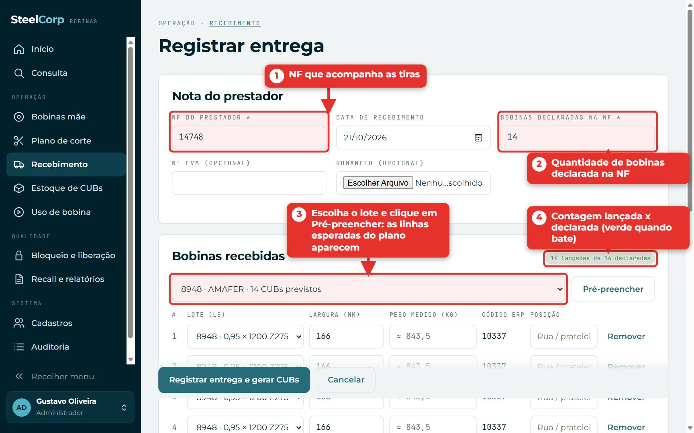
- 1NF que acompanha as tiras
- 2Quantidade de bobinas declarada na NF
- 3Escolha o lote e clique em Pré-preencher: as linhas esperadas do plano aparecem
- 4Contagem lançada x declarada (verde quando bate)
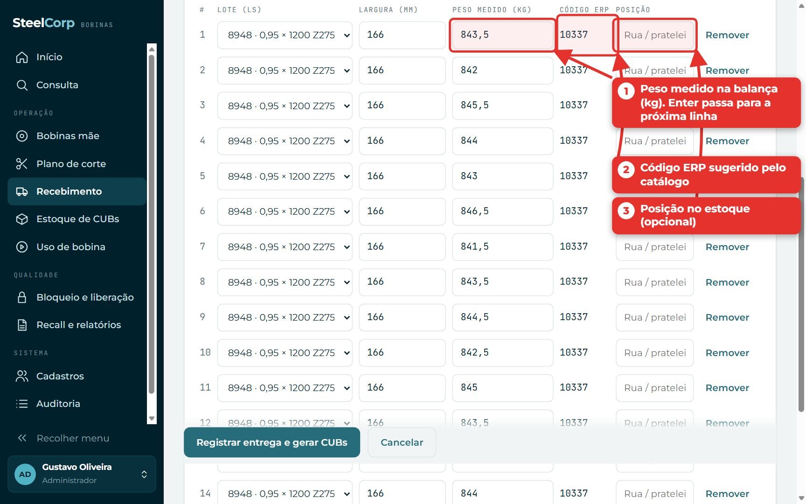
- 1Peso medido na balança (kg). Enter passa para a próxima linha
- 2Código ERP sugerido pelo catálogo
- 3Posição no estoque (opcional)
- Espessura e galvanização vêm da bobina mãe: não precisam ser digitadas e não podem divergir dela.
- O código ERP é sugerido pelo catálogo a partir de espessura, largura e galvanização. Se não houver linha no catálogo, aparece "sem código".
- Uma entrega pode trazer tiras de mais de um lote: escolha o lote em cada linha.
- O peso é obrigatório. Sem ele, o CUB não é criado.
7.3 Quando a contagem não bate
O número de linhas deve ser igual ao declarado na NF. O contador "lançadas de declaradas" fica verde quando bate e laranja quando não bate.
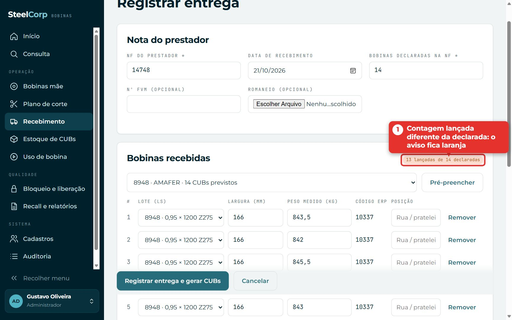
- 1Contagem lançada diferente da declarada: o aviso fica laranja
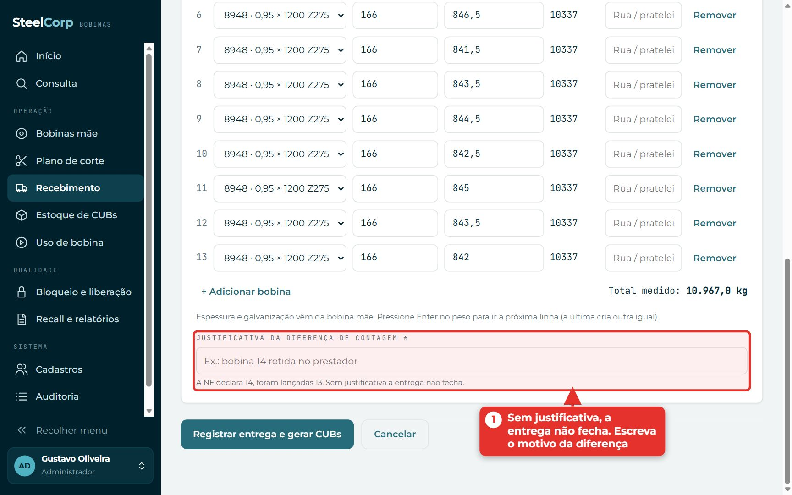
- 1Sem justificativa, a entrega não fecha. Escreva o motivo da diferença
Corrija a contagem ou escreva a justificativa (por exemplo, "bobina 14 retida no prestador"). Sem uma das duas coisas, a entrega não fecha.
7.4 Gerar os CUBs
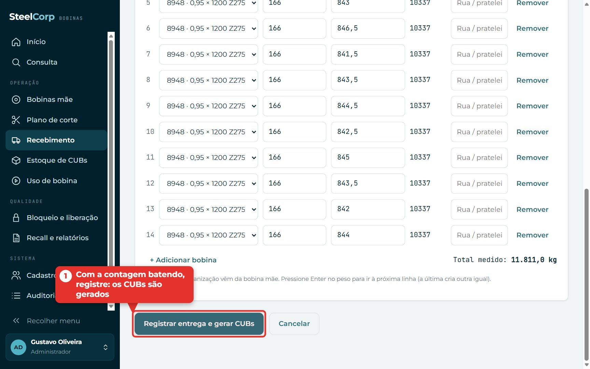
- 1Com a contagem batendo, registre: os CUBs são gerados
Clique em Registrar entrega e gerar CUBs. O sistema cria um CUB para cada linha (o número continua a sequência do ano e nunca se repete) e muda a bobina mãe para "Tiras recebidas". Se o lote estiver bloqueado, os CUBs já nascem bloqueados.
7.5 Imprimir as etiquetas
Depois de registrar, abre a página da entrega.
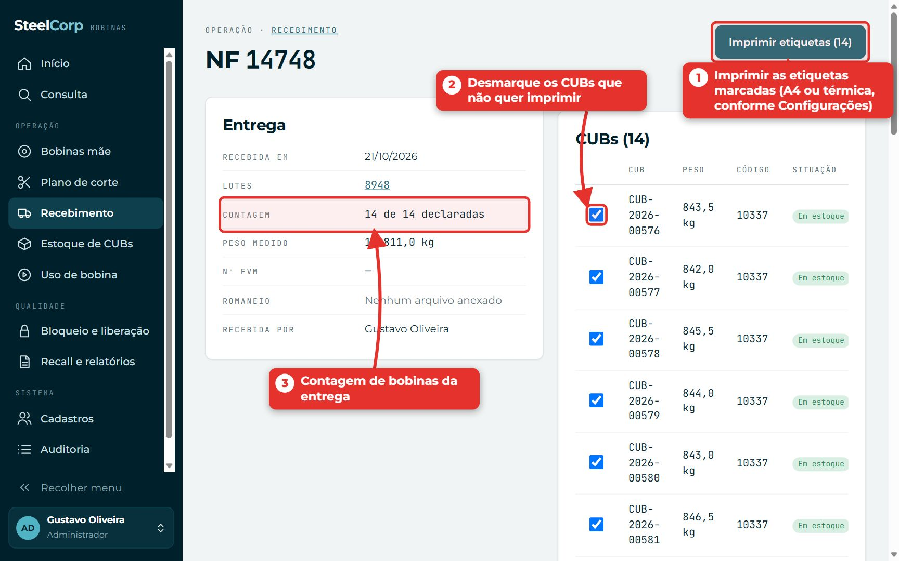
- 1Imprimir as etiquetas marcadas (A4 ou térmica, conforme Configurações)
- 2Desmarque os CUBs que não quer imprimir
- 3Contagem de bobinas da entrega
- Desmarque na tabela os CUBs que não quer imprimir (por padrão todos vêm marcados).
- Clique em Imprimir etiquetas e escolha a impressora.
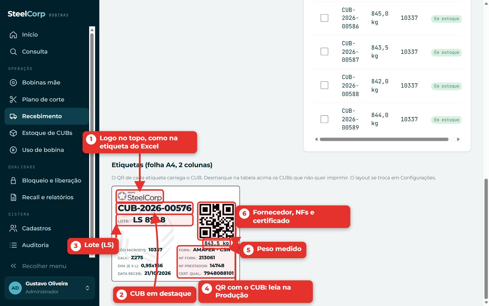
- 1Logo no topo, como na etiqueta do Excel
- 2CUB em destaque
- 3Lote (LS)
- 4QR com o CUB: leia na Produção
- 5Peso medido
- 6Fornecedor, NFs e certificado
A etiqueta segue o modelo da etiqueta da planilha: logo no topo, CUB e lote em destaque e os dados em dois blocos. O QR e o peso medido foram acrescentados.
7.6 Layout A4 ou térmico
Em Configurações → Layout da etiqueta escolha entre folha A4 com 2 colunas ou etiqueta térmica de 100 × 50 mm, uma por página.
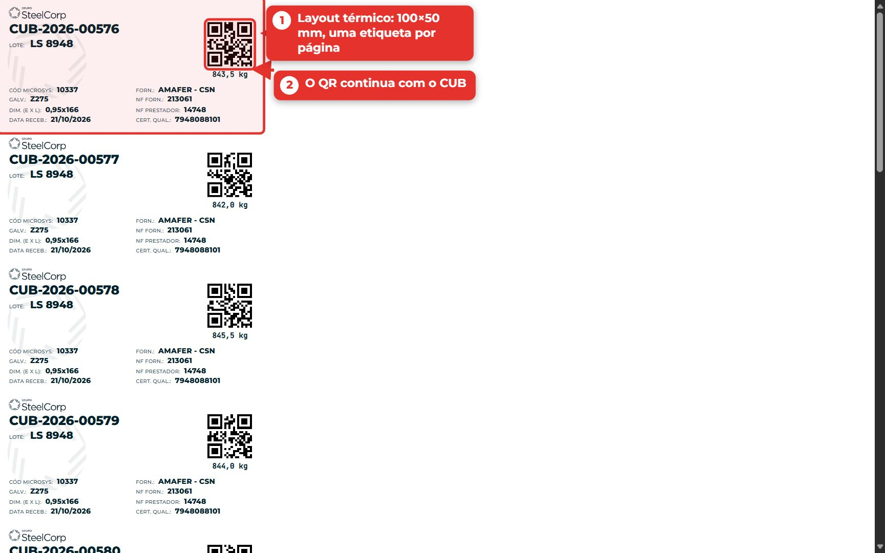
- 1Layout térmico: 100×50 mm, uma etiqueta por página
- 2O QR continua com o CUB
8Estoque de CUBs
Quem usa: Todos os perfis (posição: Almoxarifado e Produção)
Todos os CUBs, com a situação e o peso atual de cada um.
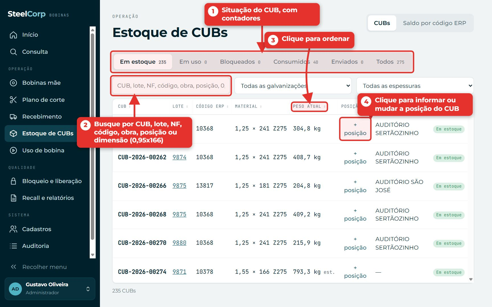
- 1Situação do CUB, com contadores
- 2Busque por CUB, lote, NF, código, obra, posição ou dimensão (0,95x166)
- 3Clique para ordenar
- 4Clique para informar ou mudar a posição do CUB
- Situação: Em estoque, Em uso, Bloqueados, Consumidos, Enviados e Todos, cada um com contador.
- Busca: por CUB, lote, NF, código ERP, obra, posição ou dimensão (por exemplo
0,95x166). - Filtros: galvanização e espessura.
- Peso atual: a sobra aparece com o peso novo. "est." indica peso estimado (dados de exemplo da planilha).
8.1 Informar ou mudar a posição
- Clique em + posição (ou no texto da posição) na linha do CUB.
- Digite, por exemplo, "Rua B · Prateleira 3" e tecle Enter. Esc cancela.
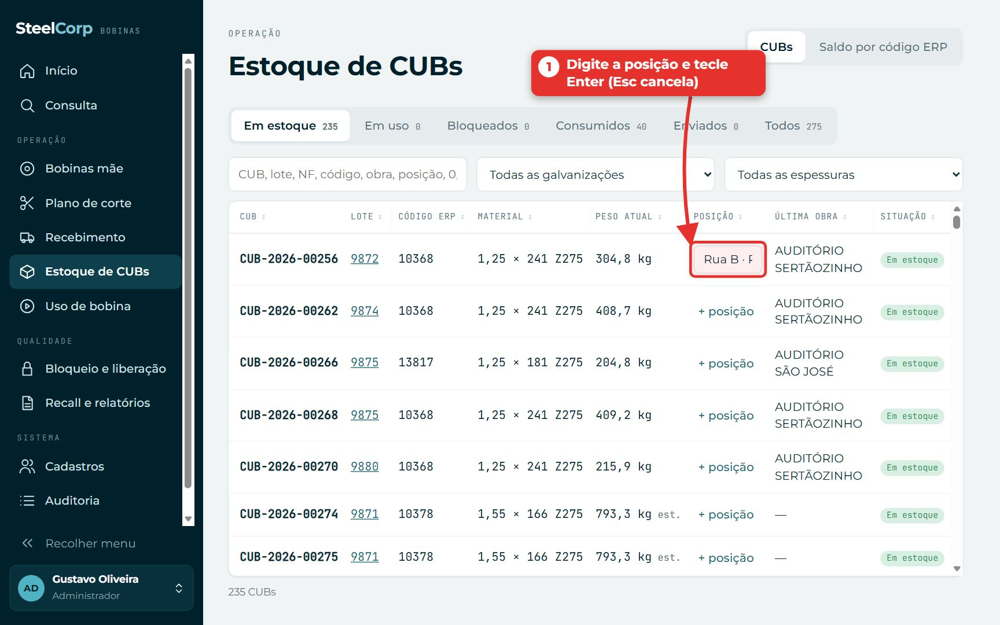
- 1Digite a posição e tecle Enter (Esc cancela)
8.2 Saldo por código ERP
A segunda visão soma, por código ERP, quantos CUBs estão disponíveis, bloqueados e em uso, com o peso disponível e o total.
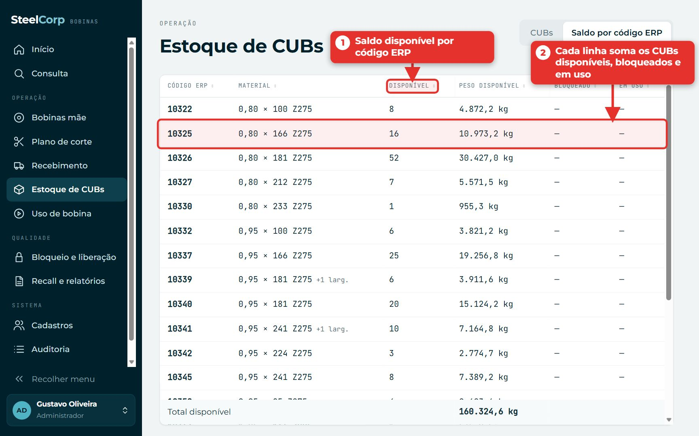
- 1Saldo disponível por código ERP
- 2Cada linha soma os CUBs disponíveis, bloqueados e em uso
9Uso de bobina
Quem usa: ProduçãoAdministrador
Pensado para o tablet, com poucos toques e botões grandes. O uso tem dois passos: montagem na perfiladeira e fim do uso, com a sobra ou o consumo total.
9.1 Ler o CUB
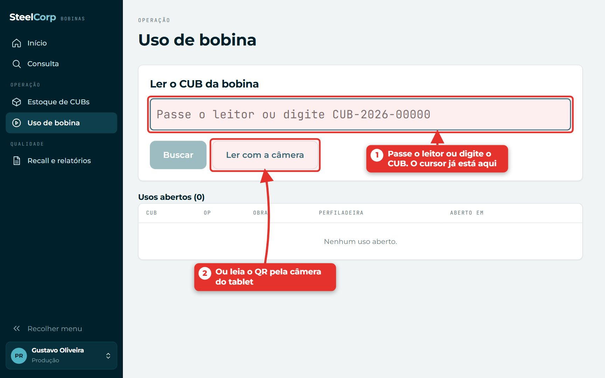
- 1Passe o leitor ou digite o CUB. O cursor já está aqui
- 2Ou leia o QR pela câmera do tablet
- Leitor de código: o cursor já está no campo. Passe o leitor na etiqueta; ele digita o CUB e confirma sozinho.
- Digitando: escreva o CUB (
CUB-2026-00576) e clique em Buscar. - Câmera do tablet: clique em Ler com a câmera e aponte o QR da etiqueta para o quadro.
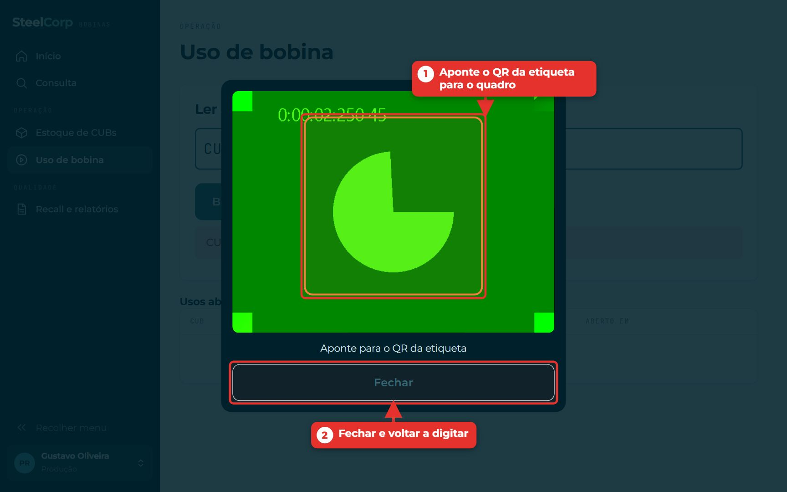
- 1Aponte o QR da etiqueta para o quadro
- 2Fechar e voltar a digitar
9.2 Quando o CUB é recusado
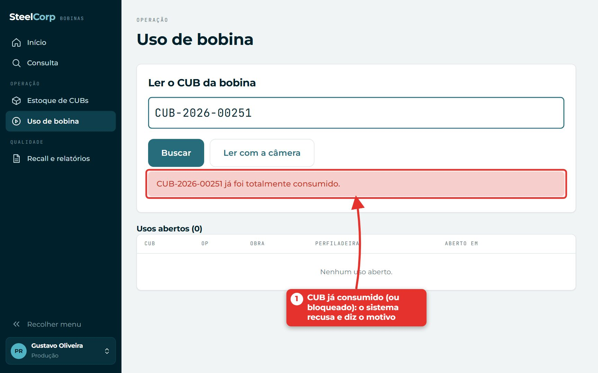
- 1CUB já consumido (ou bloqueado): o sistema recusa e diz o motivo
- Consumido, enviado ou bloqueado: não pode abrir uso. A mensagem diz o motivo (no bloqueio, aparece o motivo da Qualidade).
- Já em uso: a leitura leva direto ao passo 2, para fechar o uso que está aberto.
- Não encontrado ou texto inválido: confira o código ou a etiqueta.
9.3 Passo 1: montagem na perfiladeira
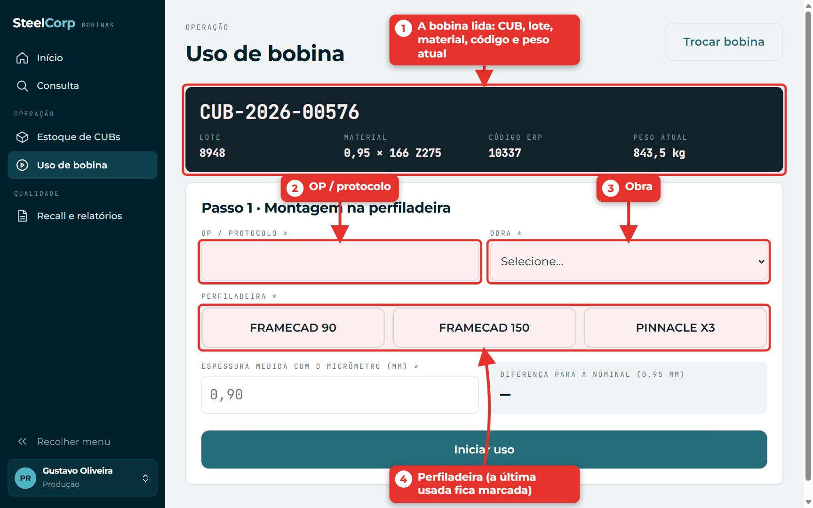
- 1A bobina lida: CUB, lote, material, código e peso atual
- 2OP / protocolo
- 3Obra
- 4Perfiladeira (a última usada fica marcada)
- Confira no cartão escuro o CUB, o lote, o material, o código e o peso atual.
- Digite a OP / protocolo e escolha a obra.
- Toque na perfiladeira (a última usada neste tablet vem marcada).
- Meça a espessura com o micrômetro e digite em Espessura medida.
- Toque em Iniciar uso.
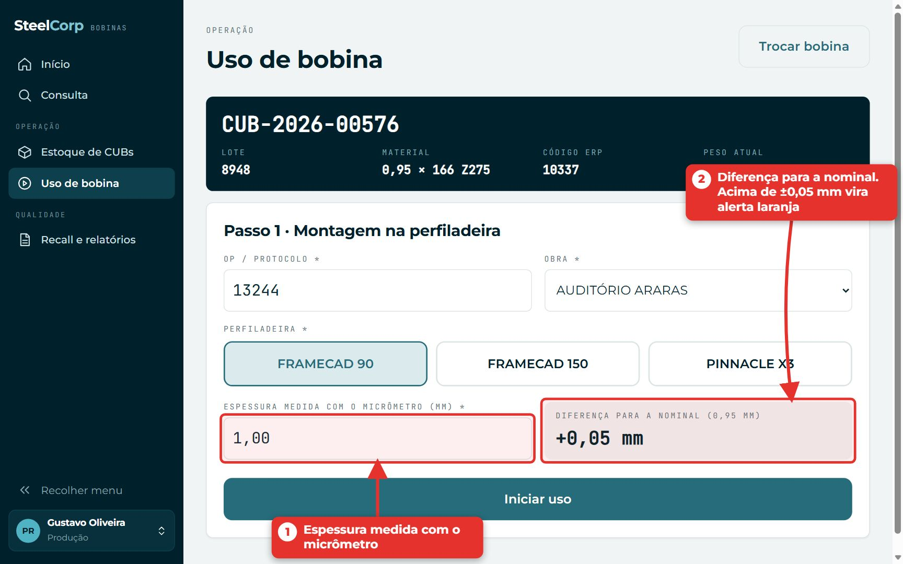
- 1Espessura medida com o micrômetro
- 2Diferença para a nominal. Acima de ±0,05 mm vira alerta laranja
A caixa ao lado da espessura mostra a diferença para a nominal. Acima de ±0,05 mm ela fica laranja, como alerta para conferir a bobina e a medição. O alerta não impede o uso.
9.4 Aviso de possível duplicidade
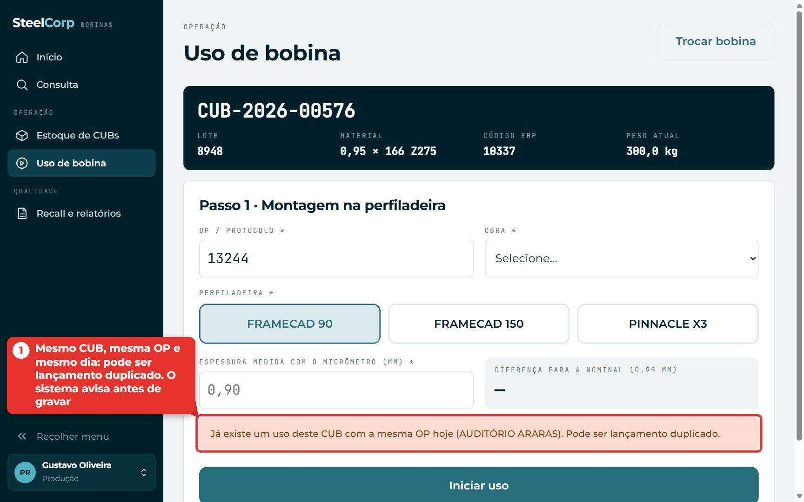
- 1Mesmo CUB, mesma OP e mesmo dia: pode ser lançamento duplicado. O sistema avisa antes de gravar
Se já existir um uso do mesmo CUB, com a mesma OP, no mesmo dia, aparece um aviso de possível lançamento duplicado. Se for mesmo um novo uso, toque em Confirmar e iniciar uso.
9.5 Passo 2: fim do uso
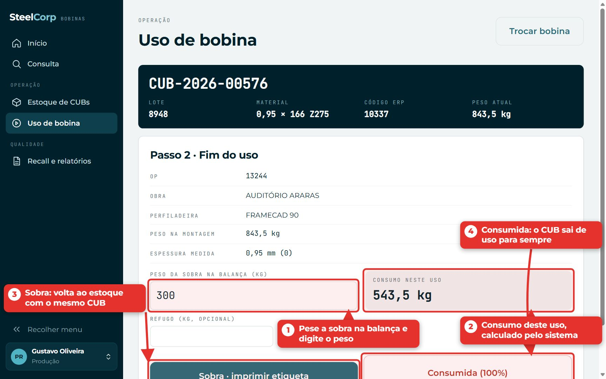
- 1Pese a sobra na balança e digite o peso
- 2Consumo deste uso, calculado pelo sistema
- 3Sobra: volta ao estoque com o mesmo CUB
- 4Consumida: o CUB sai de uso para sempre
- Pese a sobra na balança e digite o peso em Peso da sobra na balança. O sistema mostra o consumo deste uso (peso na montagem menos o peso da sobra).
- Se houve refugo, informe em Refugo (opcional).
- Escolha: Sobra (a bobina volta ao estoque) ou Consumida (acabou).
O peso da sobra não pode passar do peso da montagem, e uma sobra precisa ter peso maior que zero. Para zerar a bobina, use Consumida.
9.6 Sobra: nova etiqueta com o mesmo CUB
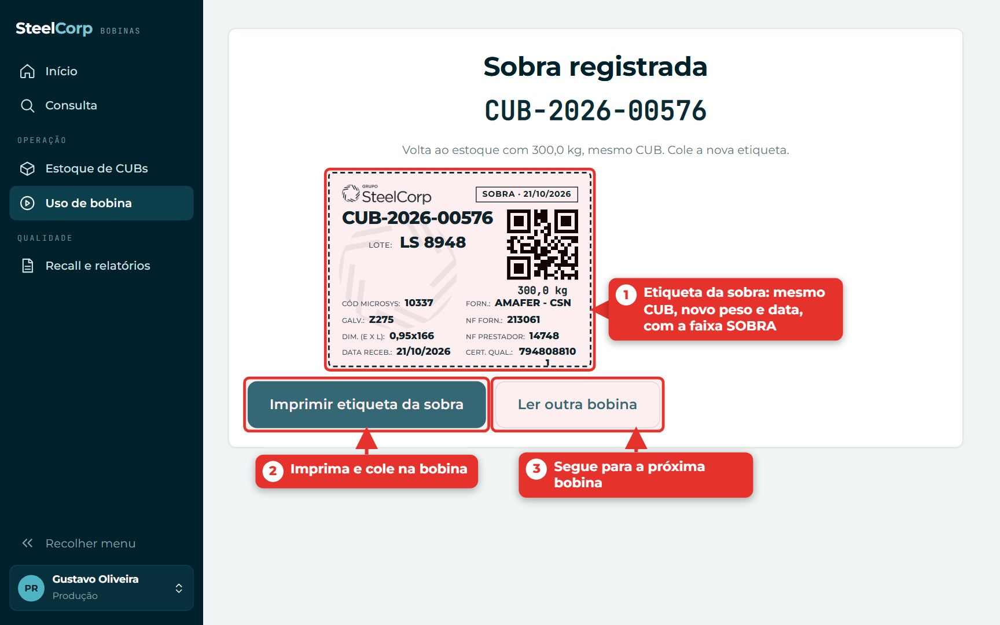
- 1Etiqueta da sobra: mesmo CUB, novo peso e data, com a faixa SOBRA
- 2Imprima e cole na bobina
- 3Segue para a próxima bobina
- Toque em Imprimir etiqueta da sobra e cole a etiqueta na bobina.
- Toque em Ler outra bobina para seguir.
A sobra pode ser usada de novo, inclusive em outra obra: leia o mesmo CUB e abra um novo uso. O peso atual já virá com o valor da sobra.
9.7 Consumida: a bobina acabou
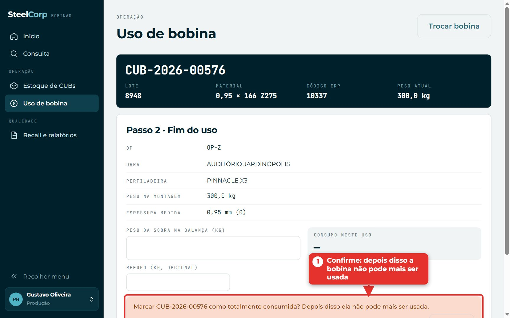
- 1Confirme: depois disso a bobina não pode mais ser usada
Toque em Consumida (100%) e confirme em Sim, consumida. O CUB não poderá mais ser usado, mas continua na rastreabilidade.
9.8 Usos abertos
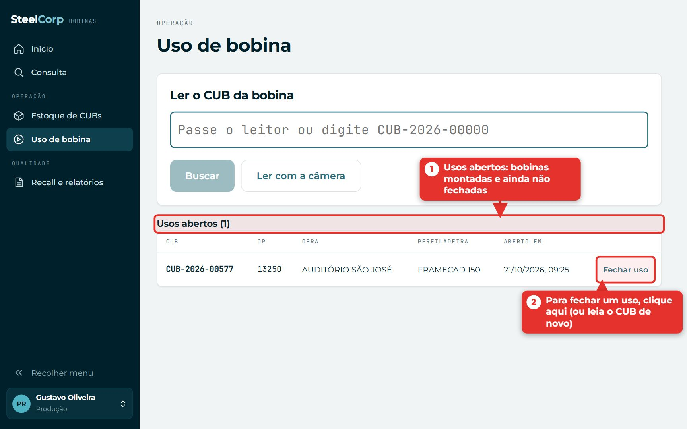
- 1Usos abertos: bobinas montadas e ainda não fechadas
- 2Para fechar um uso, clique aqui (ou leia o CUB de novo)
Na tela inicial do uso aparece a lista de usos abertos (bobinas montadas e não fechadas). Para fechar um uso, toque em Fechar uso ou leia o CUB de novo.
9.9 No tablet
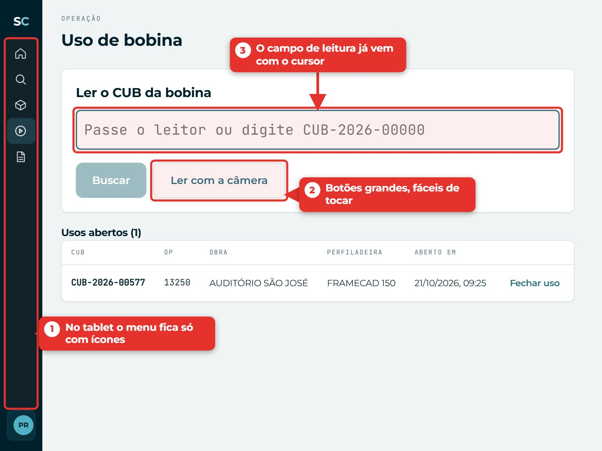
- 1No tablet o menu fica só com ícones
- 2Botões grandes, fáceis de tocar
- 3O campo de leitura já vem com o cursor
10Consulta e rastreabilidade
Quem usa: Todos os perfis
10.1 Busca universal
Abra Consulta no menu ou aperte / em qualquer tela. Digite o que souber: CUB, lote, NF, OP, obra, certificado, código ERP ou dimensão (por exemplo 0,95x166).
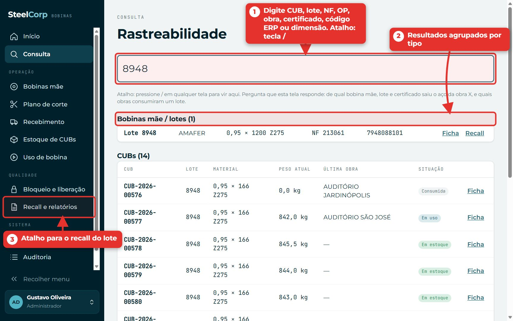
- 1Digite CUB, lote, NF, OP, obra, certificado, código ERP ou dimensão. Atalho: tecla /
- 2Resultados agrupados por tipo
- 3Atalho para o recall do lote
- Obras: leva ao dossiê da obra (de quais lotes e certificados saiu o aço dela).
- Bobinas mãe / lotes: abre a ficha ou o recall do lote.
- CUBs: abre a ficha do CUB. Se a busca achar um único CUB, aparece um botão direto para a ficha.
- Usos: mostra a OP e a obra, com atalho para o CUB.
10.2 Ficha do CUB: a cadeia de elos
- 1Bobina mãe: NF, peso e certificado herdado, com Visualizar e Baixar
- 2Entrega: NF do prestador e data
- 3Usos: obra, OP e peso antes e depois
- 4Dossiê do lote, para imprimir
| Elo | O que mostra |
|---|---|
| 1. Fornecedor e usina | De quem veio o aço. |
| 2. Bobina mãe | NF do fornecedor, peso, material e o certificado (com Visualizar e Baixar). |
| 3. Lote e OP do prestador | O lote (LS), a OP do prestador e o plano de corte. |
| 4. Entrega | NF do prestador, data de recebimento e FVM. |
| 5. CUB | Peso recebido e atual, código ERP e posição. |
| 6. Usos | Cada uso: obra, OP, data e peso antes e depois. |
| 7. Sobra | O que sobrou e voltou ao estoque, ou "consumida por completo". |
O certificado abre direto da ficha de qualquer CUB, porque é herdado da bobina mãe. Para a Qualidade, a ficha também traz o formulário para bloquear ou liberar aquele CUB.
10.3 Dossiê da obra
- 1Imprimir
- 2Exportar CSV para o Excel
- 3De quais lotes e certificados saiu o aço desta obra
Responde à pergunta central: de quais bobinas mães, lotes e certificados saiu o aço desta obra. Use Imprimir dossiê para o papel ou Exportar CSV para o Excel.
10.4 Dossiê do lote
- 1Origem, NF e certificado do lote
- 2Balanço de massa do lote
11Recall e relatórios
Quem usa: Todos os perfis
11.1 Recall por lote ou certificado
Informe o número de um lote ou de um certificado e clique em Levantar.
- 1Informe o número do lote ou do certificado
- 2Quanto já foi consumido
- 3Exportar CSV
- 4Obras e OPs que consumiram este aço
- Resumo: quantos CUBs, saldo atual, quanto já foi consumido, e em quantas obras e OPs.
- Obras e OPs que consumiram este aço: cada uso, com CUB, data e consumo.
- CUBs e saldos: a situação e o peso atual de cada um.
- Balanço de massa do lote e, para a Qualidade, o formulário de bloqueio do lote.
- Exportar CSV e Dossiê do lote para entregar ao auditor.
11.2 Balanço de massa por lote
Compara o peso líquido da bobina mãe com a soma dos CUBs mais o refilo do plano. Se a diferença passa da tolerância (Configurações), o lote fica "fora" e merece investigação: pode ser perda, erro de pesagem ou CUB faltando.
- 1Ordene por diferença para achar os lotes com problema
- 2Dentro ou fora da tolerância (Configurações)
- 3Exportar CSV
11.3 Pendências de certificado
- 1Falta o número ou o arquivo do certificado
- 2Abre a ficha para anexar
Lista as bobinas que ainda precisam de certificado, com quantos CUBs são afetados. O botão Anexar certificado leva à ficha da bobina.
12Bloqueio e liberação
Quem usa: QualidadeAdministrador
Quando há suspeita de problema (por exemplo, descamação), a Qualidade bloqueia um lote inteiro ou um CUB. Todo bloqueio e toda liberação exigem um motivo e ficam na auditoria.
12.1 Bloquear um lote ou um CUB
- 1Bloqueie um lote inteiro ou só um CUB
- 2Número do lote
- 3Motivo obrigatório
- 4Bloquear: a mãe e os CUBs com saldo
- Em Bloqueio e liberação, escolha Lote inteiro ou Um CUB.
- Digite o número do lote (ou o CUB).
- Escreva o motivo do bloqueio (obrigatório).
- Clique em Bloquear lote (ou Bloquear CUB).
- 1Bloqueios ativos, com motivo, quem e quando
- 2Para liberar, clique aqui e informe o motivo
- Bloquear um lote bloqueia a bobina mãe e todos os CUBs que ainda têm saldo.
- Um CUB que está montado na perfiladeira termina o uso normalmente, e a sobra volta bloqueada.
- CUBs já consumidos não mudam.
12.2 O que acontece na Produção
- 1Lote bloqueado: ninguém consegue abrir uso, e a tela mostra o motivo
12.3 Bloquear só um CUB
Também dá para bloquear um CUB isolado pela ficha dele, no quadro Qualidade.
- 1Na ficha do CUB, a Qualidade bloqueia só aquele CUB
- 2Motivo obrigatório
- 3Bloquear CUB
12.4 Liberar
- 1Motivo da liberação (obrigatório)
- 2Confirme a liberação
- Na lista de Bloqueios ativos, clique em Liberar lote (ou Liberar CUB).
- Escreva o motivo da liberação (obrigatório) e confirme.
12.5 Simular evento da FVM
- 1Só demonstração: mostra como a FVM bloquearia ou liberaria
- 2Aplica o resultado (reprovada bloqueia, aprovada libera)
A FVM é a ferramenta onde a empresa faz o checklist da bobina e trata as não conformidades. O sistema não faz isso. Este quadro só demonstra como uma integração futura se comportaria: informe o número da FVM, o resultado (reprovada bloqueia, aprovada libera) e o alvo, e clique em Simular evento.
13Auditoria e modo somente leitura
Quem usa: AuditorAdministrador
13.1 Auditoria
Registra tudo que é relevante, com quem fez, quando, o que e o antes e depois. A lista só cresce: não há como editar nem apagar um registro.
- 1Filtre por id, motivo, usuário ou conteúdo
- 2Ordene por data, usuário ou ação
- 3Detalhes: o antes e o depois
- 4Exportar tudo em CSV
- Filtre por texto (id, motivo, usuário ou conteúdo), por ação ou por perfil.
- Ordene por data, usuário, ação, alvo ou motivo.
- Clique em Detalhes para ver o estado antes e depois.
- Exportar CSV baixa toda a auditoria para o Excel.
- 1Estado antes e depois da mudança
13.2 O Auditor só consulta
O perfil Auditor vê as telas, mas sem botões de alterar. Os avisos mostram "Somente leitura".
- 1O Auditor só consulta: não há botões de alterar
14Roteiro completo, passo a passo
Este roteiro percorre o caso do lote 8948 (bobina mãe de 0,95 × 1.200 mm, 12.195 kg), do registro ao bloqueio. É o teste de aceite do sistema e serve também para treinar.
| # | Perfil | Tela | O que fazer | O que deve acontecer |
|---|---|---|---|---|
| 1 | Almoxarifado | Bobinas mãe → Nova | Preencher o lote 8948 sem o certificado e registrar. | O sistema recusa: certificado obrigatório. |
| 2 | Almoxarifado | Bobinas mãe → Nova | Informar o número do certificado, anexar o arquivo e a NF, e registrar. | A bobina é registrada e abre a ficha. |
| 3 | PCP | Plano de corte | Abrir o 8948, lançar 7 tiras de 166 mm, salvar e marcar como enviado. | 14 CUBs previstos de cerca de 843,5 kg; refilo de 386,2 kg. |
| 4 | PCP | Plano de corte | Confirmar a programação do prestador. | A bobina passa para "Programada". |
| 5 | Almoxarifado | Recebimento → Registrar | NF do prestador, 14 declaradas, pré-preencher pelo plano e digitar os 14 pesos. | Contagem verde (14 de 14). |
| 6 | Almoxarifado | Recebimento | Registrar e imprimir as etiquetas. | 14 CUBs gerados e 14 etiquetas com QR. |
| 7 | Produção | Uso de bobina | Ler um CUB, informar OP X, obra Y, perfiladeira e espessura. Iniciar. | O CUB passa a "Em uso". |
| 8 | Produção | Uso de bobina | Ler o mesmo CUB de novo. | Não abre um segundo uso: leva ao fim do uso aberto. |
| 9 | Produção | Uso de bobina | Fechar com sobra de 300 kg e imprimir a etiqueta da sobra. | Mesmo CUB, 300 kg, de volta ao estoque. |
| 10 | Produção | Uso de bobina | Abrir o mesmo CUB para a obra Z (OP Z) e marcar como consumida. | O CUB fica "Consumido", com 2 usos. |
| 11 | Qualidade | Recall e relatórios | Levantar o lote 8948. | Obras Y e Z, as duas OPs, os consumos, 14 CUBs com saldos e balanço dentro da tolerância. |
| 12 | Qualquer | Ficha de qualquer CUB do lote | Abrir o certificado. | O certificado abre (herdado da bobina mãe). |
| 13 | Qualidade | Bloqueio e liberação | Bloquear o lote 8948 com um motivo. | A mãe e os CUBs com saldo ficam bloqueados. |
| 14 | Produção | Uso de bobina | Tentar usar um CUB do lote. | O sistema recusa e mostra o motivo. |
| 15 | Auditor | Auditoria | Conferir os eventos. | Todos os passos acima aparecem, com perfil e horário. |
15Dúvidas e solução de problemas
15.1 Mensagens que o sistema mostra
| Mensagem (resumo) | Por que aparece | O que fazer |
|---|---|---|
| Certificado obrigatório: informe o número e anexe o arquivo | Tentou registrar a bobina mãe sem número ou sem arquivo do certificado. | Preencha o número e anexe o arquivo. Se a empresa permitir, o Administrador pode desligar a exigência. |
| Já existe uma bobina mãe com o lote … | O lote do prestador é único. | Confira o número do lote. |
| A largura utilizada passa da largura da bobina mãe | A soma das tiras do plano é maior que a bobina. | Reduza a quantidade ou a largura das tiras. |
| A NF declara N bobinas, mas foram lançadas M | A contagem da entrega não bate com a NF. | Acerte as linhas ou escreva a justificativa. |
| Linha N: informe o peso medido na balança | Falta o peso de uma bobina. | Pese e digite o peso. |
| Galvanização (ou espessura) diverge da mãe | A tira não pode ter galvanização ou espessura diferentes da bobina mãe. | Confira o lote escolhido na linha. |
| CUB … está bloqueado: … | A Qualidade bloqueou o CUB ou o lote. | Fale com a Qualidade. O motivo aparece na mensagem. |
| CUB … já foi totalmente consumido | O CUB acabou. | Confira a etiqueta; use outra bobina. |
| … não parece um CUB / não foi encontrado | Leitura incompleta ou código errado. | Leia de novo ou digite o CUB inteiro (CUB-2026-00576). |
| O peso depois não pode passar do peso antes | Peso da sobra maior que o da montagem. | Repita a pesagem. |
| Sobra precisa ter peso maior que zero | Escolheu sobra com peso zero. | Use "Consumida (100%)". |
| Informe o motivo do bloqueio (ou da liberação) | O motivo é obrigatório. | Escreva o motivo. |
| Já existe … com o nome … | Nome repetido nos Cadastros. | Use outro nome ou edite o existente. |
| O perfil … não tem permissão | O perfil atual não pode fazer essa ação. | Troque para o perfil correto (veja a tabela de permissões). |
15.2 Perguntas frequentes
| Pergunta | Resposta |
|---|---|
| Perdi meus dados. O que houve? | Os dados ficam no navegador. Limpar o histórico ou os dados do site, ou trocar de computador ou navegador, mostra o conjunto de exemplo de novo. |
| Posso desfazer um registro? | Registros não são apagados. Para corrigir, use as ações do próprio sistema (substituir certificado, nova versão do plano, liberar um bloqueio, inativar um cadastro). A auditoria guarda tudo. |
| Uma bobina foi cortada em tiras diferentes do plano. E agora? | Registre o que chegou de fato: as linhas da entrega são o que vale. O plano é só a previsão. |
| A câmera não abre. | Ela exige endereço seguro (https) ou localhost, e a permissão do navegador. Sem isso, use o leitor ou digite o CUB. |
| O peso da sobra deu diferença. | O consumo é calculado como peso na montagem menos peso da sobra. Se estiver estranho, feche o uso de novo só se ainda estiver aberto; caso contrário, avise a Qualidade para registrar a ocorrência. |
| Como entrego um relatório ao auditor? | Dossiê do lote ou da obra (Imprimir ou Exportar CSV), recall por lote ou certificado e a Auditoria exportada em CSV. |
| O que é "est." no peso? | Peso estimado pela fórmula do plano. Só existe nos dados de exemplo vindos da planilha, que não tinha peso medido. |
16Limites desta versão
- Sem servidor e sem login real: os dados ficam no navegador de cada computador. O perfil é só uma simulação.
- Impressão pelo navegador: as etiquetas e folhas saem pela impressora escolhida na janela de impressão. A comunicação direta com impressoras (ZPL, BarTender) e com a balança ainda não existe.
- Câmera: exige endereço seguro (https) para funcionar fora do próprio computador.
- Importação por planilha (CSV): a carga inicial de estoque e catálogo por arquivo ainda não está disponível; os dados de exemplo vieram da planilha de controle.
- Integrações: não há integração com ERP nem com a FVM (só o simulador de demonstração).
- Fora do escopo: checklist e tratamento de não conformidade (ficam na FVM) e o cadastro ou usuário do prestador de slitagem.
Se algo no sistema não se comportar como este manual descreve, anote a tela, o que você fez e a mensagem que apareceu, e envie para a equipe do projeto.